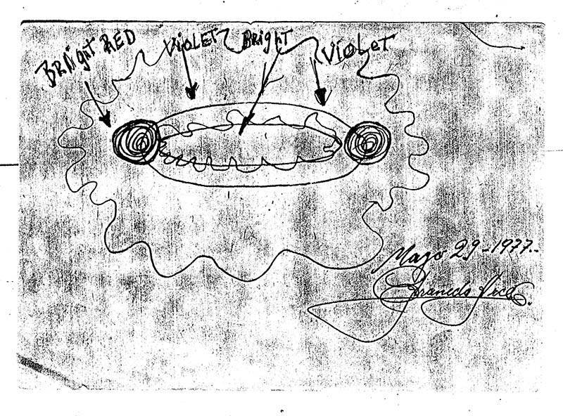
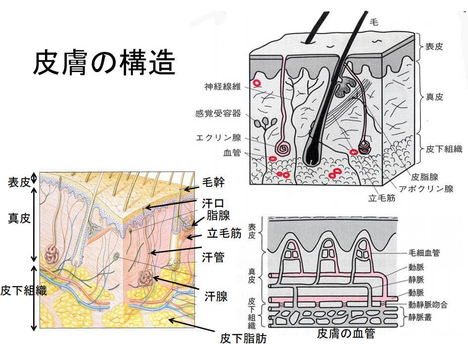

1977-04-25, Chile: UFO appears → Captain disappears → he appears 15 minutes later, 5 days have passed : solve the mystery of this time jump.
 
History
(2021-05-25) Addition. Rationalize the mystery of the passage of five days' worth of time in just 15 minutes. (2021-05-19) Addition. (2020-08-03) image added (2020-07-31) Addition. Title changed. (2020-02-25) Addition. (2020-02-18) Created. (2020-02-18 begin)Introduction
- This is a very unusual and interesting case, and I guess it was the source of Jacques Vallee's story. - I will review the title at a later date, as it makes no sense. - I will cite the source for now because I don't have time.Points of Interest
- Clocks and beards showed mysterious time leaps.Valdez would not be gone for long, stumbling back into the camp a mere 15 minutes later, but something was obviously very wrong with him. He looked haggard, worn out, wild-eyed, and most oddly of all seemed to have accrued several days of beard growth in just that short span of time, when he had been clean shaven just minutes before. The patrol leader seemed to have some trouble walking, and when he sat down he merely stared off into the distance in a trance-like state and cryptically mumbled “You don’t know who we are or where we come from but we will be back soon” before passing out. When the men searched him, they found that the watch Valdez had been wearing inexplicably showed that a full 5 days had gone by, even though he had only been gone a few minutes.- He testified that this was true in a recent interview.Valdez coming forward on an interview with Terra.cl. to claim during his research for his own book on the matter titled The Shadow of the Truth, that in retrospect he knew that he was never really abducted by aliens at all, although the strangeness with the watch and the beard was all true.reference
On April 25 of 1977, a patrol of 6 soldiers in the desert badlands wilderness of a remote area of Pampa Lluscuma, near Putre, Chile, were settled down in their camp at approximately 4:15 AM when something caught their attention in the star-flecked expanse of sky above. The men watched in awe as two very bright lights descended from the heavens, with one of them silently approaching close to the camp to show that it was a brightly lit violet oval of light with two pinpoints of red light at either end, and another of the objects sinking down behind some foothills in the near distance, its violet glow still visible frosting the hills. The remaining light apparently then dropped down to a low altitude and seemed to just roam about over the desert, casting everything in that spooky glow. The men at first cowered under emergency blankets, but it soon became clear that there was no impending danger, and that these lights were simply hovering over the landscape. And thus would begin one of the strangest UFO encounter reports to ever come out of the country of Chile. At the time this whole light show was odd enough that they felt it was worth investigating, and the leader of the patrol, a Cpl. Armando Valdez volunteered to venture out towards where the unknown light had sunk behind the hills to check things out. Valdez checked that his weapon was loaded and ready, and trudged out across the parched, scrub infested moonscape towards the unknown as his men warily gazed out towards that eerie glow in the distance. Valdez would not be gone for long, stumbling back into the camp a mere 15 minutes later, but something was obviously very wrong with him. He looked haggard, worn out, wild-eyed, and most oddly of all seemed to have accrued several days of beard growth in just that short span of time, when he had been clean shaven just minutes before. The patrol leader seemed to have some trouble walking, and when he sat down he merely stared off into the distance in a trance-like state and cryptically mumbled “You don’t know who we are or where we come from but we will be back soon” before passing out. When the men searched him, they found that the watch Valdez had been wearing inexplicably showed that a full 5 days had gone by, even though he had only been gone a few minutes. Valdez and his men Valdez would awaken from his stupor at 7 AM, and oddly his watch seemed to be frozen in time, still stuck at exactly the same point it had been when he had returned to camp. He was more lucid this time, but try as he might he could remember nothing of what had happened to him after he had left that camp, much less why his watch and beard growth seemed to indicate that he had been gone for 5 days rather than 15 minutes. He would later say of his bizarre ordeal: The surprising thing was the way it approached us. As soldiers we are trained to deal with any situation. But this phenomenon didn’t seem to have any logical explanation. I would like to regain my memory of those fifteen minutes. I would even like to submit to hypnosis to draw out information about what happened. The case became a media sensation in Chile, but there was some effort made to stem the notoriety of it all, with Chilean President and Commander in Chief Augusto Pinochet eventually putting a ban on any further interviews with the witnesses, and it then sort of slipped into obscurity until some researchers began digging into the story again. Notably journalist and researcher Patricio Abuselme went about reopening investigations into this strange UFO encounter, interviewing witnesses and Valdez himself for his 2010 book La noche de los centinelas (The Night of the Sentries), which he spent nearly 8 years compiling after extensive digging around. Abuselme says of the project: This is the case that made Chilean ufology known worldwide. However, no one bothered to conduct a serious, in-depth investigation of the case. I took up the challenge in 2002, and it took me eight years to compile the protagonists’ accounts and reassemble this “impossible story.” When I started this investigation, I did so in the secret hope of explaining the whole case in conventional terms. And I thought I was well on the way until the main protagonist of the story debunked the cases most controversial aspects - the growth of his beard and the wristwatch’s date change - by providing conventional explanations. The problem is that when I tried to corroborate it with the other witnesses, they provided a version that was mutually congruent, but at odds with the one offered by Valdes. For this reason, the book poses a controversy. If someone is looking for a story of mystics in direct contact with Martians, he or she won’t find it here. What they will find is information, information and more information. The outcome of a detailed journalistic investigation that enables the reconstruction of an intriguing real case that captured headlines over 30 years ago. Interestingly, it has come to light in recent years that the story has indeed changed somewhat, with Valdez coming forward on an interview with Terra.cl. to claim during his research for his own book on the matter titled The Shadow of the Truth, that in retrospect he knew that he was never really abducted by aliens at all, although the strangeness with the watch and the beard was all true. Wait, what? Valdez, by this time retired from the military, would give some shocking comments on the affair that had kept people on their toes looking for answers for decades. However, he far from writes it all off as a fiction, rather being very cryptic about what actually happened. He would say in this interview about his hypnotic regression and the insights he gained: I’ve been fully involved in developing my book and furthermore, looking into my experience, since I wish to be as factual as possible in my story. Truly, I wasn’t abducted. This is the reason for sensitive nature of what I’m putting forth in the book. Some important background details are being released. Look, it’s really complicated to explain all of a sudden. That’s the reason behind my trip to Putre, my scientific studies and the book I’m writing, because it’s all very complicated. I would say that I knew immediately how things had happened. What I’m explaining in my book [is making known] the reasons for which certain items went off on another track. Indeed. I didn’t think at first that I’d been abducted, although the matter of the growth of beard is true, as well as the subject of my wristwatch. But for this reason I have taken to writing the book to explain the reasons behind all of these things. My story and explanations have been accepted to a certain extent, and I have told them certain things and in a certain manner. There are many who hold points of view different from my own and I don’t have to deny that there are contradictions. But as I said, the story is mine and they have not influenced me at all regarding my book. In fact, there are those who may agree or not agree with my book tomorrow, and will not stop what I’m doing. There are mixed items. The term UFO today is contaminated by another type of thing, and I prefer to speak in terms of FANI (Unidentified Aerial Phenomena). I think that in my experience there is a bit of everything-a good measure of paranormal phenomena, strange effects, lights, many things acting in unison and this is what I am showing in my book, although it’s been hard for me to convey on paper what I felt, what I experienced and what really happened. It doesn’t make much sense to be honest, and making it even more confusing was an interview Valdez did with researcher Carlos Vergara, which was translated by Mexican UFO researcher Scott Corrales. It is a bit of a confrontational interview, with Valdez being typically cryptic and constantly plugging his book, and here is an excerpt: - Were you abducted? - In the context, I would say no…. In other words, had I been abducted, I would have been sucked up and taken by a spacecraft somewhere else. But I will make the truth known in my book.” - Excuse me, Corporal Valdes. Cut the book talk and tell me something more solid. - No, no, no. That’s not what its about. I’m not trying to promote myslef. All right, what do you want to know. Ask me and I’ll tell you.” - Where the hell were you those fifteen minutes? - I can tell you that I was always present and looking at my men. I even heard everything they said. - So what’ll it be then? Were you abducted or not? - I can’t tell you yes or no. I have a truth, but it’s a long story, son. The whole phenomenon must have transpired here on Earth. The truth is harder to explain than a lie. If I said that I went to another galaxy, it would be easier. This is harder to believe. - I don’t believe you… - You see? I only want to be at peace with myself. You want the truth? I was never abducted! But another phenomenon occurred. - What phenomenon? - Something very close to home, having to do with Earth. And it happened to me with a purpose I have just come to realize. I speak of future things in my book. They call it eschatology… What in the world is he talking about? It seems in a sense that Valdez is just as confused about what happened as anyone else, and for all of this we are no closer to any real answers as to what he encountered out in that desert wilderness, if anything. was he abducted or not? What does he think really happened? What is the meaning of his beard growth, the weirdness with the watch, and the fact that five others all witnesses the UFOs that kicked off the whole thing? It is hard to say, but it is certainly known that Chile has been rather a hotbed of UFO sightings over the years, so it seems that there could be something genuinely strange going on here. As to what that might be is anyone’s guess, and the Valdez Chilean UFO Encounter remains just as enigmatic as it always has been. ref: The Bizarre Case of the Valdez UFO Encounter in Chile | Mysterious Universe - https://mysteriousuniverse.org/2020/02/the-bizarre-case-of-the-valdez-ufo-encounter-in-chile/(2020-02-25 end)
(2020-07-31 begin)preface
- I found a fairly detailed article on this subject. I quote it in full because it is important. - The part quoted above as follows:- He testified that this was true in a recent interview.and the following testimony:Valdez coming forward on an interview with Terra.cl. to claim during his research for his own book on the matter titled The Shadow of the Truth, that in retrospect he knew that he was never really abducted by aliens at all, although the strangeness with the watch and the beard was all true.It was in the course of this investigation that Valdes dropped a bombshell in a recorded interview with Abusleme, recanting a crucial part of the story. He continued to stick to the story of the ball of light hovering near the soldiers, but he informed Abusleme that he never disappeared inside the UFO. He claimed that he left the soldiers to urinate and then stayed behind a wall throughout the key fifteen to twenty minutes of his alleged disappearance. He now said that he decided then to play a prank on the soldiers by pretending he had vanished. He explained the growth of the beard saying he hadn’t shaved for several days. He also said that his wristwatch wasn’t working, and the date change was just a coincidence.are completely different, but perhaps the former is more recent (unconfirmed). - It also appears that they visited again as they said "we will return soon!" as follows:Valdes himself had a second UFO sighting in 1980 and also hinted in the TVN interview of encountering mysterious “Men in Black,” throwing eschatological tidbits here and there.If this is the case, it seems that this case is a rare exception to the myriad of other cases in which the prophecies and promises that ETs tell abductee/contactee usually do not come true.source
The Strange Time-Warp Case of Corporal Armando Valdes - Openminds.tv - http://www.openminds.tv/the-strange-time-warp-case-of-corporal-armando-valdes/42627reference
Most countries have a single UFO case that seems to overshadow all others in terms of fame, longevity, and controversy. For instance, the U.S. has the Roswell incident and England has the Rendlesham Forest close encounters. The country of Chile is no different, where the strange time-warp story of Corporal Armando Valdes and seven soldiers of the Chilean Army have long dominated the local ufological scene. The incident occurred in 1977 in a desolate mountain desert site called Pampa Lluscuma, near the town of Putre in Chile’s northern Tarapaca region.(2021-05-19 begin)A view of Pampa Lluscuma in northern Chile, showing the type of terrain where the 1977 UFO incident took place. Image credit: Elias Munoz This case occurred in one of Chile’s so-called zonas calientes (“hot zones”) for UFO sightings, but what distinguishes it from all other close encounters is that the main witness, Corporal Valdes, apparently experienced physiological and mechanical effects after disappearing for about fifteen to twenty minutes?presumably taken inside a huge luminous globe hovering near the soldiers. The corporal reappeared in a state of shock. The strangest part of the story is that, upon his return, Valdes had a five-day growth on his beard and his wristwatch had stopped after the short experience but its calendar showed five days in the future, April 30, 1977 instead of the actual date of April 25. These effects made the case truly unique. It’s also noteworthy that the Chilean Army didn’t disavow the incident and, on the contrary, allowed the publication and broadcast of interviews with Valdes and the soldiers. The Valdes incident triggered an unprecedented wave of public interest in Chile and, to a lesser extent abroad, where it was covered by the French news agency Agence France-Presse, and the U.S. tabloid, the National Enquirer. A drawing of a disheveled corporal even appeared in the Ripley’s Believe It or Not! book series. UFO photo taken in Putre in the mid-1980s obtained by researcher Jorge Anfruns in one of his many trips to the Arica region. Image credit: Huneeus Collection
The Basic Facts
Date: April 25, 1977. Location: Stables of the Chilean Army in Pampa Lluscuma, a mountainous desert site in northern Chile. The nearest town is Putre in the foothills of the Andes, about 150 kilometers to the west of the Port of Arica. Time: The UFO was first spotted at 3:50 a.m. by a soldier on guard duty at a Chilean Army stable, who immediately alerted his leader, Corporal Valdes, and his six other companions. The UFO hovered close to the ground at a distance of about 500 meters from the soldiers. At approximately 4:15 a.m., the corporal decided to investigate it himself. He disappeared for fifteen minutes, returning at 4:30 a.m. and immediately lapsing into semi-consciousness. He regained consciousness at around 7:00 a.m. The UFO stayed on the scene until dawn, taking off at 6:35 a.m. Witnesses: Twenty-three-year-old Corporal Valdes, who then had five years of service in the Chilean Army, was accompanied by seven conscripts from the Rancagua Regiment, which was under the command of the Huamachuco Brigade based in Arica. Investigation: The initial investigation of the event was conducted by Pedro Araneda, a school teacher in Putre. Araneda was the first person to encounter the baffled soldiers when they returned to Putre following the UFO encounter. Araneda immediately returned to the scene of the incident with the witnesses, where he proceeded to tape record a long interview with all of them. He was later quoted saying, I was surprised at the corporal’s appearance. He had around six to seven days’ growth of beard. I knew soldiers have to shave every day. It was obvious that the soldiers had been through some kind of extraordinary experience. Even two or three hours after it happened, they were all still in a state of complete shock, I would say, near panic. And all the men told me the same story. To this day, Araneda’s classic interview remains the original, comprehensive first-hand source for the case.Dramatic reconstruction by artist Patrick Claeys of the Pampa Lluscuma close encounter from the French UFO comic OVNI Temoignages (UFO Testimonies) based on the investigations of journalist Jean-Claude Bourret. Image credit: J.-C. Bourret/Patrick Claeys Dissemination: For a few days, the military governor of Arica censored publication of Araneda’s sensational tape in the local newspaper, La Estrella de Arica, in order “to avoid speculations and unmeasured commentaries lacking scientific basis,” according to the official communique at the time. This was during the early years of General Augusto Pinochet’s military regime in Chile, a time when media censorship was common. However, since this was not a political story, the press insisted and extended excerpts of the tape were finally published in the local Arica newspaper. On May 19, 1977, the story appeared on the front page of El Mercurio, the country’s most prestigious and influential newspaper. As a result of the widespread publicity, the Chilean Army’s Chief Command eventually issued a formal statement which, significantly, confirmed the accuracy of the reports published by the press. The communique added, somewhat cryptically, “The Army does not pronounce itself with regard to the facts described by members of the patrol.” Later Developments: No significant new evidence about the case emerged until the late-1990s, when a couple of the soldiers were located by ufologists and were eventually interviewed for a UFO series broadcast on Chile’s national television network TVN. The seven soldiers who witnessed the close encounter in 1977 had long left the service; only Valdes had remained in the army, where he was promoted to sergeant and finally retired in 1999. Valdes himself appeared on a primetime popular talk show on TVN right after his retirement. He continued to reaffirm the validity of the experience, as did the other soldiers, although various aspects were clarified and some new things revealed. A new investigation was launched in 2002 by two Chilean researchers, journalist Patricio Abusleme and skeptic Diego Zuniga. They located most of the original witnesses, and some of them agreed to be interviewed formally. It was in the course of this investigation that Valdes dropped a bombshell in a recorded interview with Abusleme, recanting a crucial part of the story. He continued to stick to the story of the ball of light hovering near the soldiers, but he informed Abusleme that he never disappeared inside the UFO. He claimed that he left the soldiers to urinate and then stayed behind a wall throughout the key fifteen to twenty minutes of his alleged disappearance. He now said that he decided then to play a prank on the soldiers by pretending he had vanished. He explained the growth of the beard saying he hadn’t shaved for several days. He also said that his wristwatch wasn’t working, and the date change was just a coincidence. However, Valdes’s confession is not as simple as it seems. For one, the other soldiers still support the original version. Then, there is the additional important factor that Valdes became a devout evangelical Christian many years ago, a member of the Union de Centros Biblicos of Temuco, of which he is now a bishop. One can argue the denial on the part of Valdes is based on his religious faith, a position which Abulesme himself considers plausible. UFO sighted in Arica and Magallanes,” headline of the first front page article about the Valdes case published in El Mercurio, Chile’s most important newspaper, on May 17, 1977. Image credit: Huneeus Collection
The Original Version
Like many famous UFO cases, such as Roswell, the Valdes affair has become somewhat of a myth. Many rumors and wild tales were added over the years, including that some of the soldier’s rifles were bent mysteriously and that there were other military patrols involved as part of secret maneuvers with the Israelis. None of these stories were proven true. Valdes himself had a second UFO sighting in 1980 and also hinted in the TVN interview of encountering mysterious “Men in Black,” throwing eschatological tidbits here and there. For these reasons, it is important to rely on the original recorded interview made by Pedro Araneda just a couple of hours after the close encounter, a very unusual and lucky circumstance in UFO investigations. One thing that was censored by the military in all the original newspaper articles is that Corporal Valdes was not in charge of a patrol, as was stated in the press reports, but his small unit was instead guarding a large army stable with hundreds of horses. Horses are the best way to move around fast in the rugged terrain near Putre, but because Pampa Lluscuma was located close to the border with Peru and there were border tensions in 1977, the location of the stables was considered a military secret. Thus, the military created a cover story of a routine army patrol. The incident begins on April 25, 1977, at 3:50 a.m., in the cold and desolate area of Pampa Lluscuma, when the night watchman, known only as Private Rosales, first spotted what looked like two stars descending over a nearby hill. Rosales immediately alerted his superior, Corporal Valdes, as well as the other six soldiers who were resting near a campfire. As soon as the corporal saw the lights, he extinguished the campfire, and all seven soldiers gathered in shoulder-to-shoulder combat position, suspecting the lights were a smuggling plane. But, the soldiers soon realized there was much more to it than that. Their rifles could not stop what they described in the Araneda tape as an object “round as a ball . . . half oval . . . expanding and contracting, with a violet halo, like a cloud or a fog, with two flashing orange lights on either side.” One of the UFOs descended extremely slowly to the ground, at a distance of about 500 meters from the military patrol. An interesting side note is that all the animals in the area, including the horses, the patrol’s dog, and a nearby flock of sheep, supposedly were paralyzed by the presence of the object and became totally silent. According to Corporal Valdes, “the hill was entirely illuminated by this object, and we could easily make out its contours and fields even though it was a pitch-black moonless night.” Likewise, there are reports that the patrol’s radio equipment malfunctioned, which together with the effect on the animals, the physiological changes in the corporal’s beard and the mechanical effects on his watch, make this case a classic Close Encounter of the Second Kind (CE-2).A rough sketch of the UFO made by Pedro Araneda, based on the testimonies of Cpl. Valdes and the seven soldiers of the Chilean Army. Image credit: Huneeus Collection In the original interview, the corporal says he screamed in the direction of the violet light, “Go away! In the name of God I order you to go!” In those moments, continued Valdes, “we were ready for anything, to die together if necessary. But nothing would separate us. We made an oath to stay together.” Yet despite the oath, Valdes left the group around 4:15 a.m. and started walking towards the light. He was later unable to recall his motives for leaving the group. “The only thing I can tell you,” he said to Araneda, “is that something terrible was calling my attention . . . something was attracting me . . . It was like an internal communication with the light.” The other soldiers all said that, as Valdes walked towards the violet light, he suddenly disappeared. For the next fifteen-to-twenty minutes the soldiers were “yelling and calling him by name while the light was still there.” But, there was no response. The corporal’s return to the camp was almost as strange as his disappearance in that he suddenly emerged in a kind of somnambulistic state behind his companions. One of them later assured Araneda that “we didn’t hear his footsteps when he came back. Usually, you hear a person when he comes in the silence of the night.” Another soldier recalled that “for a few seconds the corporal looked at us as though he didn’t know us, and moving his head backwards and forwards, he was saying, ‘the light . . . the light’.” Valdes remained in this state until 7:00 a.m. (the UFO had taken off at 6:35 a.m.), and the soldiers reported that at intervals he would exclaim in a strange voice something like, “You don’t know who we are nor from where we come, but I tell you we will return soon!” Two specific details were noticed by the soldiers, which would make this case a cause celebre in ufology for its sheer strangeness. First, the corporal had a five-to-seven day growth of beard, even though he had shaved the previous morning. Second, his watch had stopped at 4:30 a.m. (the time he returned from the UFO) yet the calendar on his digital watch was five days in advance, reading April 30 instead of April 25, the actual date. Valdes insisted that his mind was completely blank as to what happened during the brief time he was missing. He only remembered walking towards the strange light. He told Araneda:
From there on, I lost all sensations. The soldiers told me I disappeared, as though by magic. The only thing I remember, what appears in my mind, is something like the sensation I have when I am extremely sleepy . . . I seemed to disappear into a deep well, something round, an abyss . . . from there my mind is void.At another moment in the tape, Valdes said that the event was “extraordinary, and I tell you that we are eight minds . . . It’s possible for one person to suffer a hallucination, an apparition, but here eight people are saying the same thing.” He went on, “What I don’t remember is what happened to me. I only know what the soldiers told me.” But he also told Araneda he thought the whole thing was a warning, that whatever was behind that light “was trying to tell me that this was not the last time we were going to see each other.”The National Enquirer article on the Valdes case, published on June 28, 1977. Image credit: Huneeus Collection Those were the rough facts of the Valdes case as they were originally reported in the Chilean press on the basis of Pedro Araneda’s taped interview with the soldiers. Although the military governor of Arica censored the publication of the tape for a few days, large excerpts of it were finally published in La Estrella de Arica, El Mercurio, and other newspapers. This national flurry led to the Chilean Army issuing an official communique, which stated the following:
1. The army does not pronounce itself over the facts related by the members of the patrol. 2. From the moment in which the event took place until this was reported by the press, the institution (army) had not issued an official version. 3. In accord with consultations undertaken through official means, it is stated that the versions given by the press until this moment are generally coincident with the accounts from the members of the patrol.Although the communique is written in a particularly cautious language, the main point is that the witnesses’ accounts published by the press were “coincident” to those given by the soldiers to their own army superiors. As Chile was then ruled by a military regime, no further data concerning a possible internal investigation was released by the army.A Complex Case
Researcher Patricio Abusleme’s book, La noche de los centinelas (The night of the guards), is no doubt the definitive work about the case. It has a wealth of information, including transcriptions of all the original documents, newspaper articles, and the more recent interviews conducted by him and his colleague Diego Zuniga. Abusleme explains in his book that initially he was happy to accept the recantation of Valdes: “When I started to investigate methodically and go deeper into various aspects of the night of the guards, I had the secret hope that I would be able to explain the whole episode in conventional terms.” Zuniga, on the other hand, accepted the recantation, writing a long article about it, “Satanic Abduction: Corporal Valdes Rewrites the Most Incredible Story of Abduction Known in Latin America,” with his skeptical colleague, the well-known Argentinean journalist and longtime ufologist Alejandro Agostinelli. However, in the end things are not clearly black and white. Abusleme wrote in his book,As I continued my investigation, I was hoping to find testimonies which could corroborate and complement the new version of non-commissioned officer (Ret.) Valdes. However, to my surprise and bafflement, I only found testimonies which reaffirmed the original story, which coincided and complemented each other while refuting the current version of Valdes.Humberto Rojas, one of the original soldiers who would go on to become a policemen for some thirty years until his recent retirement, confirmed all the basic facts contained in the original version of the story, including the beard and the watch. One of the main problems with Corporal Valdes’s new version is the growth of his beard. Military rules everywhere require that all enlisted personnel and officers must shave every day, and the Chilean Army, with its old German traditions and discipline, was particularly strict in the Pinochet era. That a corporal, who must show a good example of proper behavior to his soldiers, could go around without shaving for several days was just not allowed. Then, there is the wristwatch problem. If the watch wasn’t working, why did Valdes bother to put it on that day? Plus the extraordinary coincidence that the watch malfunctioned exactly at the time of the Pampa Lluscuma event, but the calendar demonstrated a date five days ahead.Valdes in the exact spot of the 1977 incident in 2002, when he gave Patricio Abusleme his revisionist version of the case. Image credit: Patricio Abusleme Yet another crucial problem is that the new version of the event doesn’t coincide at all with what Valdes told his superiors?first his commander in Arica and later doctors and psychologists at the military hospital in Santiago where he was under observation for several days. The psychological evaluations and recommendations written by Dr. Roberto Abarca and Captain Dr. Roberto Lailahacar Chavez (both published in Abusleme’s book) never mention the prank story, even though the reports were not at all sympathetic to the corporal. At that time, Valdes was clearly sticking to the original version, and the doctors tried to find psychological reasons for the experience. They recommended to the army that Valdes should be reassigned to a different unit and that “the [UFO] subject should not be discussed with him, and he should be forbidden to give interviews to the press and TV.” Despite all the problems and publicity, Valdes was not discharged from the army, but was instead reassigned to a regiment in the southern city of Temuco, where he still lives. A final serious problem with Valdes’s new version is the behavior of Valdes right after the 1977 incident, which was attested by the seven soldiers and Pedro Araneda. Valdes was clearly affected by the experience, passing out and saying strange things. Unless he was a great actor, he seemed far more like someone who just experienced something truly unknown than a guy playing a prank. pic bear7 (Left to right): Patricio Abusleme, Humberto Rojas and the author of this article, Antonio Huneeus. Image Credit: Antonio Huneeus For all these reasons, I fully agree with Abuselme’s final conclusion that all the evidence “is pointing to a denial [by Valdes] of the possibility that UFO abductions could be real, in an attempt to fit his unusual experience with his religious convictions. On the other hand, he could be looking for an easy solution to end decades of being besieged by journalists.” In the end, the conflicting versions of the Valdes case show how difficult it is to prove conclusively that any UFO case is either unknown or prosaic. But regardless of what the final verdict may turn out to be in the Valdes case?if one is ever reached?there is no doubt that this close encounter is at least of great sociological importance in the history of Chilean ufology and, to a lesser extent, that of ufology in general. This article originally appeared in Issue 19 (April/May 2013) of Open Minds Magazine. The post The Strange Time-Warp Case of Corporal Armando Valdes appeared first on Openminds.tv.
Preface
- Peter William Shelley discusses this matter. I will only add a few details that have not been mentioned above.Summary
- The local UFO researcher who investigated this case spent a long time and his research is meticulous. Therefore, it is reliable. - 1:11:30: Hundreds of horses (*1) reacted abnormally(they were terribly frightened) to the UFOs, so we can conclude that it was not a fabrication. 1:18:00 Valdez spent a month in the hospital and was diagnosed with a possible cultural hallucination.（*1）
- Valdez et al. were assigned to manage military horses at a military-managed stable near the site. The initial story that they were "on a reconnaissance mission" when they encountered the UFO was false information to keep the military's secret (the existence of a military horse stable) a secret.Video
05 May 14 2021 Peter William Shelley (2021-05-19 end)
(2021-05-25 begin)Preface
- The biggest mystery in this case is the part where "five days had passed for Valdez alone in a mere 15 minutes or so. - The evidence for this is that Valdez's beard and wristwatch indicate the passage of five days. The watch could be explained by a malfunction, but not the beard. As mentioned above, the military requires shaving every day, so the theory that Valdez simply left his beard unkempt can be ruled out. - This mystery of the time lapse seems very puzzling, but it seems to be solved surprisingly easily by referring to other UFO cases as follows. Any other explanation seems to be difficult. - I will focus on the mystery of the beard growth. As an added bonus, I will also consider the leap in the date on the wristwatch calendar.Solve the mystery of 5 days worth of beard growth in 15 minutes
- In the following, I assume that the testimonies of the people involved were not fabricated in the main. - In the previous article below, I discussed the case of abductee Terry Lovelace, who testified that his UFO sighting caused him to lose a lot of water from his body and that he drank a lot of water to make up for it. His thirst was so intense that no matter how much water she drank, he still could not get enough.- The two men left their tent and luggage in place, got in their car and drove away from the area. A few strange things happened. He felt extremely thirsty for the first time in his life. It later turned out that he was severely dehydrated. In addition, their eyes were swollen and they were sunburned all over, including the soles of their feet. His friend's face was swollen. ref: Tony Rodrigues : The instantaneous movement by portal caused loss of electrolytes from the body. (2020-12-14)- Although the specific mechanism is unknown, it is likely that in the case of Valdez, as in the case of Terry Lovelace, a large amount of water was lost from the body due to the UFO encounter. When the body loses a large amount of water, the skin and subcutaneous tissue of the face also shrinks. - When one hears the words "five days' worth of beard growth," one tends to associate it with a full beard, but this is not true. A man's beard grows 0.2mm to 0.4mm per day; five days' worth of growth is 1mm to 2mm. - Beards grow 4mm to 5mm deeper than the skin surface (*1). Since the hair follicles are deep within the skin, a 1mm or 2mm beard can easily protrude from the skin surface if the skin tissue shrinks due to massive water loss. - In other words, the beard did not grow, but rather the tissues of the facial surface area atrophied. Valdez et al. without medical knowledge may have misinterpreted this as beard growth.ref: Human Anatomy and Physiology 2 - http://plaza.umin.ac.jp/~ehara/hirokoku/jintai9.pdf（*1）
Beards tend to grow from deeper locations than other parts of the body. For example, the hair follicles on the arms, for example, are 1.5 to 2.0 mm deep, while the beard can be 4.0 to 5.0 mm deep. ref: http://denzou.hatenablog.com/entry/2018/03/03/201513Regarding the fact that 5 days had elapsed on the wristwatch calendar.
… … … … (2021-05-25 end)
First published article (Japanese)
1977-04-25, Chile : UFO 出現→調査に向かった隊長が消失→15分後に出現したが 5日分の時間が経過 （途中6） (2021-05-25)
Degree of completion of this article: